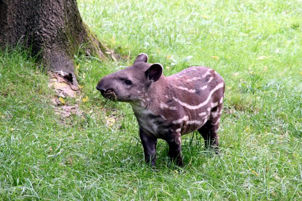
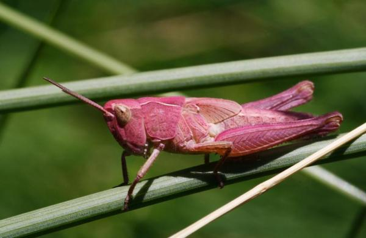
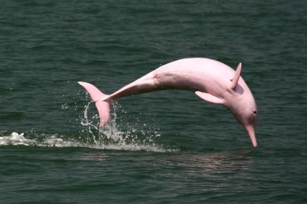

Hailing from China, Japan and Russia and introduced in Europe, the mandarin duck is a race appreciated by its enormous beauty. The male possesses a variety of incredible colors like green, fuchsia, blue, brown, cream and orange. Because of its color, they have become one of the most exotic animals in the world.
They usually inhabit areas close to lakes, ponds or lagoons. They are considered carriers of good fortune throughout Asia, as well as affection and conjugal love. In important weddings they are sometimes offered as the main gift.
The tapir is a large herbivorous mammal inhabiting wooded areas of South America, Central America and Southeast Asia. It has one of the oldest families spanning about 55 million years. They have a very versatile trunk and are docile and calm animals. They are in danger of extinction, especially in Mexico, due to indiscriminate hunting, their low reproductive potential and the destruction of their habitat.
It is common to see green, brown and even white grasshoppers. However, the pink grasshopper is of this color because of a recessive gene that they develop, unlike other grasshoppers. Although there is an isolated case of every 50,000, it is believed that the survival of this type of grasshopper is due to their color. This is mainly because they are no longer attractive to the eyes of predators.
The leafy sea dragon, is a beautiful marine fish of the same family as the seahorse. Originally from Australia, they have long leaf-shaped extensions that are distributed throughout their body, which helps them camouflage themselves. This is one of the most desired exotic animals in the world.
They look like floating algae and because of their physical characteristics, they are the object of various threats. They are trapped by collectors and even used in alternative medicine. Their current status is of minor concern, yet they are protected by the Australian government.
Getting sea dragons for your aquarium is a difficult and expensive process as distributing them requires special licenses to ensure the proper origin or permits. Still, captive support is very difficult and most individuals die.
The pink dolphin lives in the tributaries of the Amazon and the Orinoco basin. They feed on fish, river turtles and crabs. The total population volume is unknown and is therefore included in the IUCN Red List. They are kept in captivity in some aquariums of the world, however, they are difficult to train which causes them high mortality to live in non-wild state. The pink dolphin is considered a true exotic animal because of its incredible character and color.
